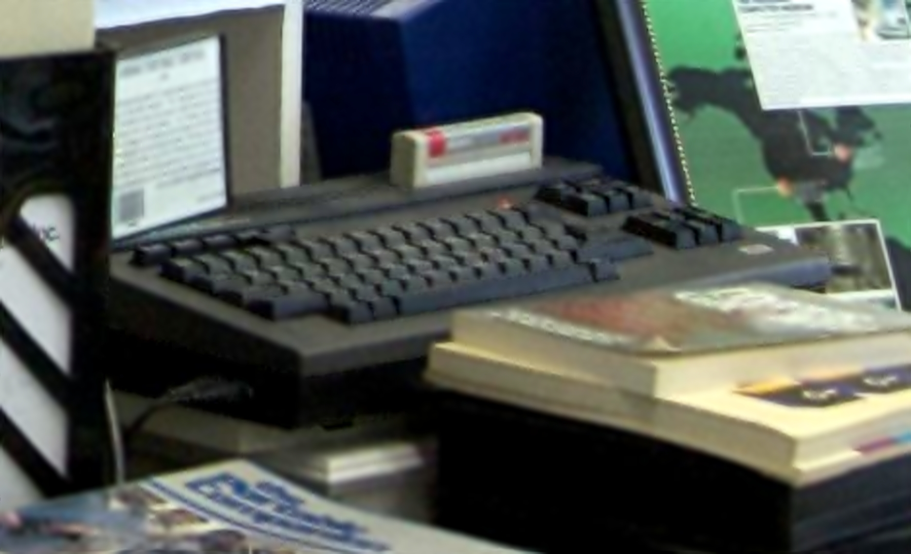
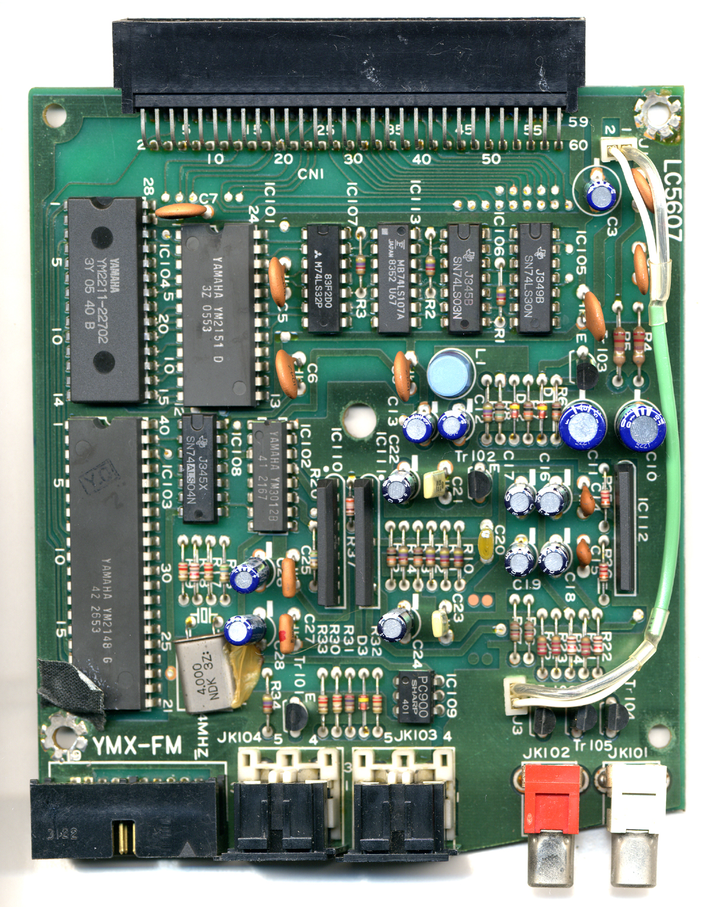

Yamaha CX5M Music Computer
The whole computer is a synthesizer — an MSX machine sold in music stores, played by typing

Overview
The Yamaha CX5M, introduced in 1984, is an MSX-standard computer built around a Yamaha FM synthesizer. It was one of only two MSX machines ever sold in North America (alongside Spectravideo's), and it was marketed not as a computer but as a Music Computer — sold in music stores, not computer shops. The machine boots to Microsoft MSX BASIC; a built-in SFG-01 module carries the 8-voice, 4-operator YM2151 FM chip (the voice architecture family of the DX9/DX21/DX100), with stereo audio outputs, a connector for Yamaha's YK-10 music keyboard, and MIDI ports. The whole point of the machine was making music, and the QWERTY computer keyboard was the primary composition instrument.
Music was made through software cartridges rather than piano-style playing. The YRM-101 FM Music Composer cartridge presented a musical-stave editing screen where the user entered notes step-time from the QWERTY keyboard — no real-time recording. The YRM-104 Music Macro cartridge made the synthesizer programmable from BASIC with commands like _INST(1) and _PHRASE(1,"cdefg"). YRM-102/502 let you program banks of 48 voices; YRM-103 was a DX7 voicing cartridge that gave the notoriously cryptic DX7 a real screen for editing patches. First CX5M units could only send MIDI out (to a DX7); the CX5M II / CX7M-128 (1986) added the SFG-05 module with MIDI input, and the FB-01 (1986) was essentially the SFG-05 in a standalone box.
The CX5M sold for about £1,000 in the UK in 1985 and was a commercial niche product that failed to crack the US market. Its cartridge software and ROMs are preserved and emulated today; a complete CX5M set is in the collection of the Musée des Instruments de Musique in Brussels, and another is held by the HomeComputerMuseum in the Netherlands.
Deep dive
The defining interaction is step-time text entry as music composition. In FM Music Composer, notes were placed on a stave using QWERTY keys; in Music Macro, whole phrases were typed as strings inside BASIC (_PHRASE(1,"cdefg")). Contemporaries described it as a daunting task — everything had to be entered via the keyboard. This inverts the Fairlight's professional graphical composition into a consumer textual one, and it anchors the 'text keyboard as music input' tradition that runs down to Csound-style programming. The piano-style YK-10 was an optional bolt-on, not the point.
The DX7 — the best-selling synthesizer in history — had a famously cryptic two-line LCD for programming its FM voices. The CX5M's YRM-103 DX7 Voicing cartridge connected the computer to a DX7 over MIDI and let the user edit the synth's patches on the CX5M's full screen. The machine's headline pitch to musicians was literally that a computer could fix the worst interface in electronic music.
Yamaha was a founding member of the MSX consortium (launched 1983 by Kazuhiko Nishi's ASCII and Microsoft Japan). MSX BASIC is Microsoft's, the standard was driven by Nishi, and the CX5M's international release made it the canonical consumer 'music computer' — one of only two MSX machines ever sold in the US.
MSX flopped in the US and the CX5M became a cult collector's item. The CX5M II (1986) added MIDI input via the SFG-05; the FB-01 (1986) was the SFG-05 as a standalone desktop module. Cartridge ROM images and the SFG-01/05 firmware are preserved and emulated today via the cx5m.net archive, and the machine is exhibited in Brussels and the Netherlands.
Team & pioneers
- Yamaha Corporation. Manufacturer; the CX line came from Yamaha's digital musical instrument group, which also produced the YM2151 'OPM' FM chip.
- MSX consortium. Yamaha was a founding member; MSX BASIC 1.0 is Microsoft's, and the standard was driven by Kazuhiko Nishi (ASCII/Microsoft Japan).
- Digital Music Systems Ltd. UK third-party maker of the D.M.S.1 cartridge, which added real-time 8-track sequencing of internal and external MIDI in 1985.
Media


Sources
- Wikipedia — Yamaha CX5M
- Eirik Lie — CX5M FAQ (owner since 1985)
- Nuts & Volts — 'Micro Memories: The Yamaha CX5M: The Music Computer — 80's Style' (2005)
- MSX Wiki — Yamaha CX5M specifications and regional models
- cx5m.net — The Yamaha CX5M Music Computer Resource (archived)
- SonicState — Yamaha CX5M Music Computer
- HomeComputerMuseum — Yamaha CX5M Music Computer